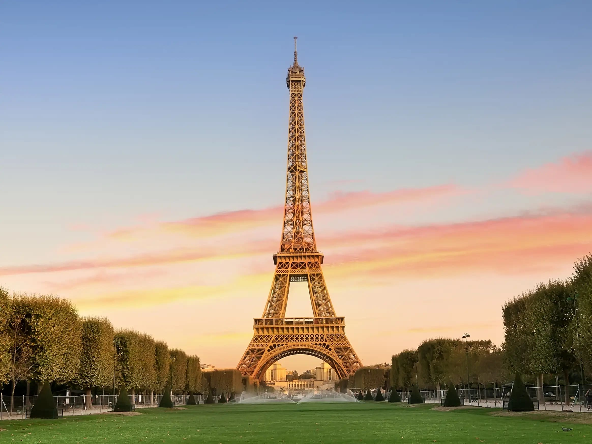
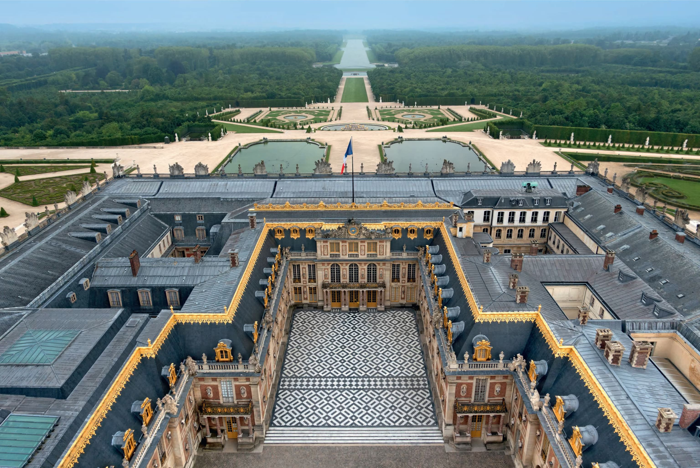
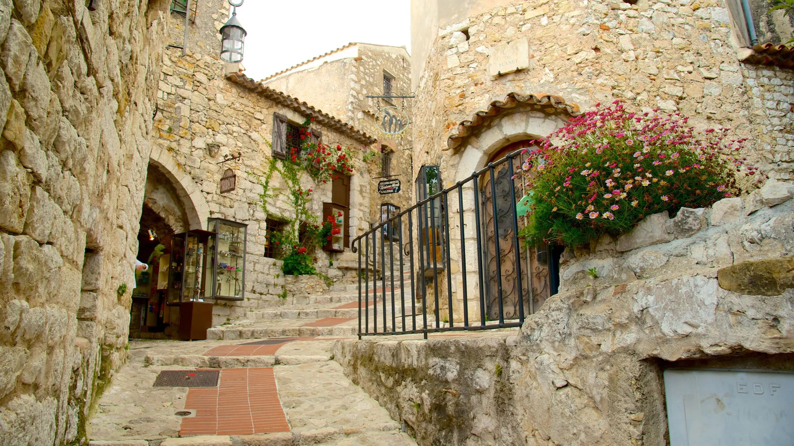
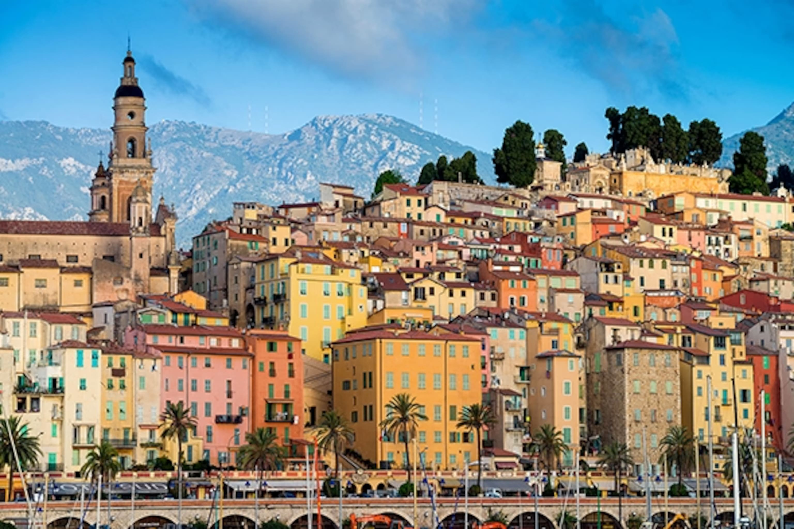

France - The Epitome of Art, Culture, and Gastronomy

Introduction
France is one of the most visited countries in the world, celebrated for its rich history, cultural influence, and timeless elegance. From medieval towns to modern cities, France offers a remarkable blend of tradition and innovation.
Visitors are drawn to its iconic landmarks, world-renowned museums, scenic countryside, and exceptional cuisine. Whether exploring historic castles, relaxing in vineyards, or enjoying café culture, France provides a diverse and unforgettable travel experience.
Quick Facts
- Capital: Paris
- Population: Approximately 67 million
- Language: French
- Currency: Euro (€)
- Best Time to Visit: April–June and September–October
Explore Major Destinations
Jump to a specific destination
\r\n
Paris 🗼
Region: Île-de-France
Paris, often called the “City of Light,” is the cultural and artistic heart of France. It is known for its historic monuments, grand boulevards, and vibrant café culture.
Travelers can admire world-famous artworks at the Louvre, enjoy scenic walks along the Seine, and experience the city’s reputation for fashion, romance, and fine dining.
Must-See Attractions:
- Eiffel Tower - Iconic landmark offering panoramic views
- Louvre Museum - Home to the Mona Lisa and thousands of artworks
- Notre-Dame Cathedral - Historic Gothic cathedral
- Arc de Triomphe - Monument honoring French history
- Sacré-Cœur - Basilica overlooking Paris from Montmartre
↑ Back to top
Palace of Versailles 👑

Region: Île-de-France (near Paris)
The Palace of Versailles symbolizes the power and luxury of the French monarchy. Originally a royal hunting lodge, it was transformed into an extravagant palace under King Louis XIV.
Visitors can explore lavishly decorated rooms, walk through grand gardens, and learn about key moments in European history, including the signing of the Treaty of Versailles.
Must-See Attractions:
- Hall of Mirrors - Famous gallery with reflective arches
- King's Grand Apartments - Lavish royal living spaces
- Gardens of Versailles - Extensive landscaped gardens
- Grand Trianon - Elegant retreat for royalty
- Marie-Antoinette's Estate - Queen’s private village
↑ Back to top
Provence 🌻

Region: Southeastern France
Provence is known for its lavender fields, sunny climate, and relaxed Mediterranean lifestyle. The region is rich in Roman history and charming rural landscapes.
Visitors can explore ancient towns, taste local wines, and enjoy traditional Provençal cuisine. Provence offers a peaceful contrast to France’s busy cities.
Must-See Attractions:
- Lavender Fields - Seasonal purple landscapes
- Palais des Papes - Historic papal palace in Avignon
- Gordes - Scenic hilltop village
- Pont du Gard - Roman aqueduct bridge
- Les Baux-de-Provence - Medieval stone village
↑ Back to top
French Riviera ⛱️

Region: Southeastern coast along Mediterranean
The French Riviera, also known as the Côte d’Azur, is famous for its turquoise waters, luxury resorts, and glamorous lifestyle.
This coastal region attracts visitors with beautiful beaches, elegant seaside towns, and international events such as the Cannes Film Festival.
Must-See Attractions:
- Promenade des Anglais - Seafront walkway in Nice
- Monaco - Luxury principality and Formula 1 Grand Prix
- Cannes - City known for its film festival
- Saint-Tropez - Stylish beach destination
- Antibes - Historic town with art museums
↑ Back to top
Travel Tips for France
Understanding local customs and travel practices will help make your trip to France more enjoyable.
- Language: Learning basic French phrases is appreciated
- Transportation: High-speed trains connect major cities efficiently
- Dining: Meals are meant to be enjoyed slowly
- Tipping: Service charge is included; small tips are optional
- Museums: Free entry is often available on the first Sunday of each month
← Back to Europe Home